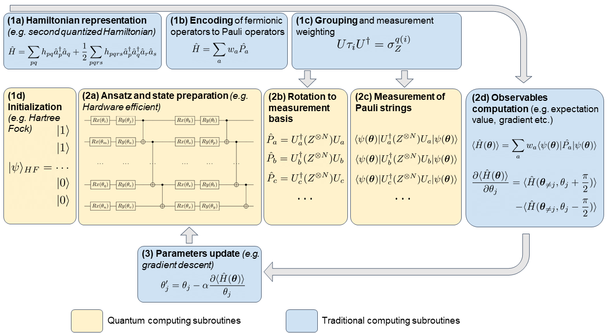

The most important operators are the Pauli matrices, often referred to the \( X,Y \) and \( Z \) gates
$$ \begin{align} X = \begin{bmatrix} 0 & 1 \label{_auto1}\\ 1 & 0 \end{bmatrix}, Y = \begin{bmatrix} 0 & -i \label{_auto2}\\ i & 0 \end{bmatrix}, Z = \begin{bmatrix} 1 & 0 \label{_auto3}\\ 0 & -1 \end{bmatrix}. \label{_auto4} \end{align} $$Through the tensor product we can compose operators acting on multiple qubits.
Another important set of gates are the \textit{rotation operators} \( R_x, R_y \) and \( R_z \). By application to a qbit, we can reach any point on the Bloch sphere by usage of all three once. They are expressed as
$$ \begin{align*} \begin{split} R_x(\theta) &= \exp{-iX\theta/2} = \begin{bmatrix} \cos(\theta/2) & -i\sin(\theta/2) \\ -i\sin(\theta/2) & \cos(\theta/2) \end{bmatrix}, \\ R_y(\theta) &= \exp{-iY\theta/2} = \begin{bmatrix} \cos(\theta/2) & -\sin(\theta/2) \\ -\sin(\theta/2) & \cos(\theta/2) \end{bmatrix}, \\ R_z(\theta) &= \exp{-iZ\theta/2} = \begin{bmatrix} \exp{-i\theta/2} & 0 \\ 0 & \exp{i\theta/2} \end{bmatrix} \end{split} \end{align*} $$with all having a period of \( 4\pi \).
The Rayleigh-Ritz variational principle states that for a given Hamiltonian \( H \), the expectation value of a trial state or just ansatz \( \vert x \rangle \) puts a lower bound on the ground state energy \( E_0 \).
$$ \frac{\langle \psi \vert H\vert \psi \rangle}{\langle \psi \vert \psi \rangle} \geq E_0. $$The ansatz is typically chosen to be a parameterized superposition of basis states that can be varied to improve the energy estimate, \( \vert \psi\rangle equiv \vert psi(\boldsymbol{\theta})\rangle \) where \( \boldsymbol{\theta} = (\theta_1, \ldots, \theta_M) \) are the \( M \) optimization parameters.
To have any flexibility in the ansatz \( \vert \psi\rangle \), we need to allow for parametrization. The most common approach is the so-called \( R_y \) ansatz, where we apply chained operations of rotating around the \( y \)-axis by \( \boldsymbol{\theta} = (\theta_1,\ldots,\theta_Q) \) of the Bloch sphere and CNOT operations.
Applications of \( y \) rotations specifically ensures that our coefficients always remain real, which often is satisfactory when dealing with many-body systems.
After the ansatz has been constructed, the Hamiltonian must be applied. As discussed, the Hamiltonian must be written in terms of Pauli strings.
To obtain the expectation value of the ground state energy, one can measure the expectation value of each Pauli string,
$$ \begin{align*} E(\boldsymbol{\theta}) = \sum_i w_i\langle \psi(\boldsymbol{\theta})\vert P_i \vert \psi(\boldsymbol{\theta})\rangle \equiv \sum_i w_i f_i, \end{align*} $$where \( f_i \) is the expectation value of the Pauli string \( i \).
This is estimated statistically by considering measurements in the appropriate basis of the operator in the Pauli string.
With \( N_0 \) and \( N_1 \) as the number of \( 0 \) and \( 1 \) measurements respectively, we can estimate \( f_i \) since
$$ \begin{align*} f_i = \lim_{N \to \infty} \frac{N_0 - N_1}{N}, \end{align*} $$where \( N \) as the number of shots (measurements).
Each Pauli string requires it own circuit, where multiple measurements of each string is required. Adding the results together with the corresponding weights, the ground state energy can be estimated. To optimize with respect to \( \boldsymbol{\theta} \), a classical optimizer is often applied.
The VQE algorithm consists of several steps, partially done on a classical computer:
The updated variational parameters are then sent back to the quantum computer, and the process is repeated until the optimal variational parameters are found.

We start with a reminder on the VQE method with applications to the one-qubit system discussed last week.
Here we revisit the one-qubit system and develop a VQE code for studying this system using gradient descent as a method to optimize the variational ansatz.
We start with a simple \( 2\times 2 \) Hamiltonian matrix expressed in terms of Pauli \( X \) and \( Z \) matrices, as discussed in the project text.
We define a symmetric matrix \( H\in {\mathbb{R}}^{2\times 2} \)
$$ H = \begin{bmatrix} H_{11} & H_{12} \\ H_{21} & H_{22} \end{bmatrix}, $$We let \( H = H_0 + H_I \), where
$$ H_0= \begin{bmatrix} E_1 & 0 \\ 0 & E_2\end{bmatrix}, $$is a diagonal matrix. Similarly,
$$ H_I= \begin{bmatrix} V_{11} & V_{12} \\ V_{21} & V_{22}\end{bmatrix}, $$where \( V_{ij} \) represent various interaction matrix elements.
We can view \( H_0 \) as the non-interacting solution
$$ \begin{equation} H_0\vert 0 \rangle =E_1\vert 0 \rangle, \label{_auto5} \end{equation} $$and
$$ \begin{equation} H_0\vert 1\rangle =E_2\vert 1\rangle, \label{_auto6} \end{equation} $$where we have defined the orthogonal computational one-qubit basis states \( \vert 0\rangle \) and \( \vert 1\rangle \).
We rewrite \( H \) (and \( H_0 \) and \( H_I \)) via Pauli matrices
$$ H_0 = \mathcal{E} I + \Omega \sigma_z, \quad \mathcal{E} = \frac{E_1 + E_2}{2}, \; \Omega = \frac{E_1-E_2}{2}, $$and
$$ H_I = c \boldsymbol{I} +\omega_z\sigma_z + \omega_x\sigma_x, $$with \( c = (V_{11}+V_{22})/2 \), \( \omega_z = (V_{11}-V_{22})/2 \) and \( \omega_x = V_{12}=V_{21} \). We let our Hamiltonian depend linearly on a strength parameter \( \lambda \)
$$ H=H_0+\lambda H_\mathrm{I}, $$with \( \lambda \in [0,1] \), where the limits \( \lambda=0 \) and \( \lambda=1 \) represent the non-interacting (or unperturbed) and fully interacting system, respectively.
The model is an eigenvalue problem with only two available states.
Here we set the parameters \( E_1=0 \), \( E_2=4 \), \( V_{11}=-V_{22}=3 \) and \( V_{12}=V_{21}=0.2 \).
The non-interacting solutions represent our computational basis. Pertinent to our choice of parameters, is that at \( \lambda\geq 2/3 \), the lowest eigenstate is dominated by \( \vert 1\rangle \) while the upper is \( \vert 0 \rangle \). At \( \lambda=1 \) the \( \vert 0 \rangle \) mixing of the lowest eigenvalue is \( 1\% \) while for \( \lambda\leq 2/3 \) we have a \( \vert 0 \rangle \) component of more than \( 90\% \). The character of the eigenvectors has therefore been interchanged when passing \( z=2/3 \). The value of the parameter \( V_{12} \) represents the strength of the coupling between the two states.
This part is best seen using the jupyter-notebook
from matplotlib import pyplot as plt
import numpy as np
dim = 2
Hamiltonian = np.zeros((dim,dim))
e0 = 0.0
e1 = 4.0
Xnondiag = 0.20
Xdiag = 3.0
Eigenvalue = np.zeros(dim)
# setting up the Hamiltonian
Hamiltonian[0,0] = Xdiag+e0
Hamiltonian[0,1] = Xnondiag
Hamiltonian[1,0] = Hamiltonian[0,1]
Hamiltonian[1,1] = e1-Xdiag
# diagonalize and obtain eigenvalues, not necessarily sorted
EigValues, EigVectors = np.linalg.eig(Hamiltonian)
permute = EigValues.argsort()
EigValues = EigValues[permute]
# print only the lowest eigenvalue
print(EigValues[0])
Now rewrite it in terms of the identity matrix and the Pauli matrix X and Z
# Now rewrite it in terms of the identity matrix and the Pauli matrix X and Z
X = np.array([[0,1],[1,0]])
Y = np.array([[0,-1j],[1j,0]])
Z = np.array([[1,0],[0,-1]])
# identity matrix
I = np.array([[1,0],[0,1]])
epsilon = (e0+e1)*0.5; omega = (e0-e1)*0.5
c = 0.0; omega_z=Xdiag; omega_x = Xnondiag
Hamiltonian = (epsilon+c)*I+(omega_z+omega)*Z+omega_x*X
EigValues, EigVectors = np.linalg.eig(Hamiltonian)
permute = EigValues.argsort()
EigValues = EigValues[permute]
# print only the lowest eigenvalue
print(EigValues[0])
For a one-qubit system we can reach every point on the Bloch sphere (as discussed earlier) with a rotation about the \( x \)-axis and the \( y \)-axis.
We can express this mathematically through the following operations (see whiteboard for the drawing), giving us a new state \( \vert \psi\rangle \)
$$ \vert\psi\rangle = R_y(\phi)R_x(\theta)\vert 0 \rangle. $$We can produce multiple ansatzes for the new state in terms of the angles \( \theta \) and \( \phi \). With these ansatzes we can in turn calculate the expectation value of the above Hamiltonian, now rewritten in terms of various Pauli matrices (and thereby gates), that is compute
$$ \langle \psi \vert (c+\mathcal{E})\boldsymbol{I} + (\Omega+\omega_z)\boldsymbol{\sigma}_z + \omega_x\boldsymbol{\sigma}_x\vert \psi \rangle. $$We can now set up a series of ansatzes for \( \vert \psi \rangle \) as function of the angles \( \theta \) and \( \phi \) and find thereafter the variational minimum using for example a gradient descent method.
To do so, we need to remind ourselves about the mathematical expressions for the rotational matrices/operators.
$$ R_x(\theta)=\cos{\frac{\theta}{2}}\boldsymbol{I}-\imath \sin{\frac{\theta}{2}}\boldsymbol{\sigma}_x, $$and
$$ R_y(\phi)=\cos{\frac{\phi}{2}}\boldsymbol{I}-\imath \sin{\frac{\phi}{2}}\boldsymbol{\sigma}_y. $$# define the rotation matrices
# Define angles theta and phi
theta = 0.5*np.pi; phi = 0.2*np.pi
Rx = np.cos(theta*0.5)*I-1j*np.sin(theta*0.5)*X
Ry = np.cos(phi*0.5)*I-1j*np.sin(phi*0.5)*Y
#define basis states
basis0 = np.array([1,0])
basis1 = np.array([0,1])
NewBasis = Ry @ Rx @ basis0
print(NewBasis)
# Compute the expectation value
#Note hermitian conjugation
Energy = NewBasis.conj().T @ Hamiltonian @ NewBasis
print(Energy)
Not an impressive results. We set up now a loop over many angles \( \theta \) and \( \phi \) and compute the energies
# define a number of angles
n = 20
angle = np.arange(0,180,10)
n = np.size(angle)
ExpectationValues = np.zeros((n,n))
for i in range (n):
theta = np.pi*angle[i]/180.0
Rx = np.cos(theta*0.5)*I-1j*np.sin(theta*0.5)*X
for j in range (n):
phi = np.pi*angle[j]/180.0
Ry = np.cos(phi*0.5)*I-1j*np.sin(phi*0.5)*Y
NewBasis = Ry @ Rx @ basis0
Energy = NewBasis.conj().T @ Hamiltonian @ NewBasis
Edifference=abs(np.real(EigValues[0]-Energy))
ExpectationValues[i,j]=Edifference
print(np.min(ExpectationValues))
Clearly, this is not the best way of proceeding. Rather, here we could try to find the optimal values for the parameters \( \theta \) and \( \phi \) through computation of their respective gradients and thereby find the minimum as function of the optimal angles \( \hat{\theta} \) and \( \hat{\phi} \).
Let us now implement a classical gradient descent algorithm to the computation of the energies. We will follow closely https://journals.aps.org/pra/abstract/10.1103/PhysRevA.99.032331 in order to calculate gradients of the Hamiltonian.
In order to optimize the VQE ansatz, we need to compute derivatives with respect to the variational parameters. Here we develop first a simpler approach tailored to the one-qubit case. For this particular case, we have defined an ansatz in terms of the Pauli rotation matrices.
These define an arbitrary one-qubit state on the Bloch sphere through the expression
$$ \vert\psi\rangle = \vert \psi(\theta,\phi)\rangle =R_y(\phi)R_x(\theta)\vert 0 \rangle. $$Each of these rotation matrices can be written in a more general form as
$$ R_{i}(\gamma)=\exp{-(\imath\frac{\gamma}{2}\sigma_i)}=\cos{(\frac{\gamma}{2})}\boldsymbol{I}-\imath\sin{(\frac{\gamma}{2})}\boldsymbol{\sigma}_i, $$where \( \sigma_i \) is one of the Pauli matrices \( \sigma_{x,y,z} \).
It is easy to see that the derivative with respect to \( \gamma \) is
$$ \frac{\partial R_{i}(\gamma)}{\partial \gamma}=-\frac{\gamma}{2}\boldsymbol{\sigma}_i R_{i}(\gamma). $$We can now calculate the derivative of the expectation value of the Hamiltonian in terms of the angles \( \theta \) and \( \phi \). We have two derivatives
$$ \frac{\partial}{\partial \theta}\left[\langle \psi(\theta,\phi) \vert \boldsymbol{H}\vert \psi(\theta,\phi)\rangle\right]=\frac{\partial}{\partial \theta}\left[\langle\boldsymbol{H}(\theta,\phi)\rangle\right]=\langle \psi(\theta,\phi) \vert \boldsymbol{H}(-\frac{\imath}{2}\boldsymbol{\sigma}_x\vert \psi(\theta,\phi)\rangle+\hspace{0.1cm}\mathrm{h.c}, $$and
$$ \frac{\partial }{\partial \phi}\left[\langle \psi(\theta,\phi) \vert \boldsymbol{H}\vert \psi(\theta,\phi)\rangle\right]=\frac{\partial}{\partial \phi}\left[\langle\boldsymbol{H}(\theta,\phi)\rangle\right]=\langle \psi(\theta,\phi) \vert \boldsymbol{H}(-\frac{\imath}{2}\boldsymbol{\sigma}_y\vert \psi(\theta,\phi)\rangle+\hspace{0.1cm}\mathrm{h.c}. $$This means that we have to calculate two additional expectation values in addition to the expectation value of the Hamiltonian itself. If we stay with an ansatz for the single qubit states given by the above rotation operators, we can, following for example the article by Maria Schuld et al, show that the derivative of the expectation value of the Hamiltonian can be written as (we focus only on a given angle \( \phi \))
$$ \frac{\partial}{\partial \phi}\left[\langle\boldsymbol{H}(\phi)\rangle\right]=\frac{1}{2}\left[\langle\boldsymbol{H}(\phi+\frac{\pi}{2})\rangle-\langle\boldsymbol{H}(\phi-\frac{\pi}{2})\rangle\right]. $$To see this, consider again the definition of the rotation operators. We can write these operators as
$$ R_i(\phi)=\exp{-\imath(\phi \boldsymbol{\sigma}_i)}, $$with \( \boldsymbol{sigma}_i \), with \( \boldsymbol{\sigma}_i \) being any of the Pauli matrices \( X \), \( Y \) and \( Z \). The latter can be generalized to other unitary matrices as well. The derivative with respect to \( \phi \) gives
$$ \frac{\partial R_i(\phi)}{\partial \phi}=-\frac{\imath}{2} \boldsymbol{\sigma}_i\exp{-\imath(\phi \boldsymbol{\sigma}_i)}=-\frac{\imath}{2} \boldsymbol{\sigma} R_i(\phi). $$Our ansatz for a general one-qubit state on the Bloch sphere contains the product of a rotation around the \( x \)-axis and the \( y \)-axis. In the derivation here we focus only on one angle however. Our ansatz is then given by
$$ \vert \psi \rangle = R_i(\phi)\vert 0 \rangle, $$and the expectation value of our Hamiltonian is
$$ \langle \psi \vert \hat{H}\vert \psi \rangle = \langle 0 \vert R_i(\phi)^{\dagger} \hat{H}R_i(\phi)\vert 0\rangle. $$Our derivative with respect to the angle \( \phi \) has a similar structure, that is
$$ \frac{\partial }{\partial \phi}\left[\langle \psi(\theta,\phi) \vert \boldsymbol{H}\vert \psi(\theta,\phi)\rangle\right]=\langle \psi(\theta,\phi) \vert \boldsymbol{H}(-\frac{\imath}{2}\boldsymbol{\sigma}_y\vert \psi(\theta,\phi)\rangle+\hspace{0.1cm}\mathrm{h.c}. $$In order to rewrite the equation of the derivative, the following relation is useful
$$ \langle \psi \vert \hat{A}^{\dagger}\hat{B}\hat{C}\vert \psi \rangle = \frac{1}{2}\left[ \langle \psi \vert (\hat{A}+\hat{C})^{\dagger}\hat{B}(\boldsymbol{A}+\hat{C})\vert \psi \rangle-\langle \psi \vert (\hat{A}-\hat{C})^{\dagger}\hat{B}(\boldsymbol{A}-\hat{C})\vert \psi \rangle\right], $$where \( \hat{A} \), \( \hat{B} \) and \( \hat{C} \) are arbitrary hermitian operators.
If we identify these operators as \( \hat{A}=\boldsymbol{I} \), with \( \boldsymbol{I} \) being the unit operator, \( \hat{B}=\hat{H} \) our Hamiltonian, and \( \hat{C}=-\imath \boldsymbol{\sigma}_i/2 \), we obtain the following expression for the expectation value of the derivative (excluding the hermitian conjugate)
$$ \langle \psi \vert \boldsymbol{I}^{\dagger}\hat{H}(-\frac{\imath}{2}\boldsymbol{\sigma}_i\vert \psi \rangle = \frac{1}{2}\left[ \langle \psi \vert (\boldsymbol{I}-\frac{\imath}{2} \boldsymbol{\sigma}_i)^{\dagger}\hat{H}(\boldsymbol{I}-\frac{\imath}{2} \boldsymbol{\sigma}_i)\vert \psi \rangle-\langle \psi \vert (\boldsymbol{I}+\frac{\imath}{2} \boldsymbol{\sigma}_i)^{\dagger}\hat{H}(\boldsymbol{I}+\frac{\imath}{2} \boldsymbol{\sigma}_i)\vert \psi \rangle\right]. $$If we then use that the rotation matrices can be rewritten as
$$ R_{i}(\phi)=\exp{-(\imath\frac{\phi}{2}\sigma_i)}=\cos{(\frac{\phi}{2})}\boldsymbol{I}-\imath\sin{(\frac{\phi}{2})}\boldsymbol{\sigma}_i, $$we see that if we set the angle to \( \phi=\pi/2 \), we have
$$ R_{i}(\frac{\pi}{2})=\cos{(\frac{\pi}{4})}\boldsymbol{I}-\imath\sin{(\frac{\pi}{4})}\boldsymbol{\sigma}_i=\frac{1}{\sqrt{2}}\left(\boldsymbol{I}-\frac{\imath}{2} \boldsymbol{\sigma}_i\right). $$This means that we can write
$$ \langle \psi \vert \boldsymbol{I}^{\dagger}\hat{H}(-\frac{\imath}{2}\boldsymbol{\sigma}_i\vert \psi \rangle = \frac{1}{2}\left[ \langle \psi \vert R_i(\frac{\pi}{2})^{\dagger}\hat{H}R_i(\frac{\pi}{2})\vert \psi \rangle-\langle \psi \vert R_i(-\frac{\pi}{2})^{\dagger}\hat{H}R_i(-\frac{\pi}{2})^{\dagger}\vert \psi \rangle\right]=\frac{1}{2}(\langle\hat{H}(\phi+\frac{\pi}{2})\rangle-\langle\hat{H}(\phi-\frac{\pi}{2})\rangle). $$In order to implement the above equations, we need to remind the reader about basic elements of various optimization approaches. Our main focus here will be various gradient descent approaches and quasi-Newton methods like Broyden's algorithm and variations thereof.
This material is covered by the lectures from FYS4411 on gradient optimization
Let us implement efficient implementations of gradient methods to the derivatives of the Hamiltonian expectation values.
from matplotlib import pyplot as plt
import numpy as np
from scipy.optimize import minimize
dim = 2
Hamiltonian = np.zeros((dim,dim))
e0 = 0.0
e1 = 4.0
Xnondiag = 0.20
Xdiag = 3.0
Eigenvalue = np.zeros(dim)
# setting up the Hamiltonian
Hamiltonian[0,0] = Xdiag+e0
Hamiltonian[0,1] = Xnondiag
Hamiltonian[1,0] = Hamiltonian[0,1]
Hamiltonian[1,1] = e1-Xdiag
# diagonalize and obtain eigenvalues, not necessarily sorted
EigValues, EigVectors = np.linalg.eig(Hamiltonian)
permute = EigValues.argsort()
EigValues = EigValues[permute]
# print only the lowest eigenvalue
print(EigValues[0])
# Now rewrite it in terms of the identity matrix and the Pauli matrix X and Z
X = np.array([[0,1],[1,0]])
Y = np.array([[0,-1j],[1j,0]])
Z = np.array([[1,0],[0,-1]])
# identity matrix
I = np.array([[1,0],[0,1]])
epsilon = (e0+e1)*0.5; omega = (e0-e1)*0.5
c = 0.0; omega_z=Xdiag; omega_x = Xnondiag
Hamiltonian = (epsilon+c)*I+(omega_z+omega)*Z+omega_x*X
EigValues, EigVectors = np.linalg.eig(Hamiltonian)
permute = EigValues.argsort()
EigValues = EigValues[permute]
# print only the lowest eigenvalue
print(EigValues[0])
# define the rotation matrices
def Rx(theta):
return np.cos(theta*0.5)*I-1j*np.sin(theta*0.5)*X
def Ry(phi):
return np.cos(phi*0.5)*I-1j*np.sin(phi*0.5)*Y
#define basis states
basis0 = np.array([1,0])
basis1 = np.array([0,1])
# Computing the expectation value of the energy
def Energy(theta,phi):
Basis = Ry(phi) @ Rx(theta) @ basis0
energy = Basis.conj().T @ Hamiltonian @ Basis
return energy
# Set up iteration using gradient descent method
eta = 0.1
Niterations = 100
# Random angles using uniform distribution
theta = 2*np.pi*np.random.rand()
phi = 2*np.pi*np.random.rand()
pi2 = 0.5*np.pi
for iter in range(Niterations):
thetagradient = 0.5*(Energy(theta+pi2,phi)-Energy(theta-pi2,phi))
phigradient = 0.5*(Energy(theta,phi+pi2)-Energy(theta,phi-pi2))
theta -= eta*thetagradient
phi -= eta*phigradient
print(Energy(theta,phi))
The above approach means that we are setting up several matrix-matrix and matrix-vector multiplications. Although straight forward it is not the most efficient way of doing this, in particular in case the matrices become large (and sparse). But there are some more important issues.
In a physical realization of these systems we cannot just multiply the state with the Hamiltonian. When performing a measurement we can only measure in one particular direction. For the computational basis states which we have, \( \vert 0\rangle \) and \( \vert 1\rangle \), we have to measure along the bases of the Pauli matrices and reconstruct the eigenvalues from these measurements.
From our earlier discussions we know that the Pauli \( Z \) matrix has the above basis states as eigen states through
$$ Z\vert 0 \rangle = \boldsymbol{Z}\vert 0 \rangle=+1\vert 0 \rangle, $$and
$$ Z\vert 1 \rangle = \boldsymbol{Z}\vert 1 \rangle=-1\vert 1 \rangle, $$with eigenvalue \( -1 \).
For the Pauli \( X \) matrix on the other hand we have
$$ \boldsymbol{\sigma}_x\vert 0 \rangle = \boldsymbol{X}\vert 0 \rangle=+1\vert 1 \rangle, $$and
$$ \boldsymbol{\sigma}_x\vert 1 \rangle = \boldsymbol{X}\vert 1 \rangle=-1\vert 0 \rangle, $$with eigenvalues \( 1 \) in both cases. The latter two equations tell us that the computational basis we have chosen, and in which we will prepare our states, is not an eigenbasis of the \( \sigma_x \) matrix.
We rewrite the Pauli \( X \) matrix in terms of a Pauli \( Z \) matrixcusing the Hadamard matrix twice, that is
$$ \boldsymbol{X}=\boldsymbol{\sigma}_x=\boldsymbol{H}\boldsymbol{Z}\boldsymbol{H}. $$The Pauli \( Y \) matrix can be written as
$$ \boldsymbol{Y}=\boldsymbol{\sigma}_y=\boldsymbol{H}\boldsymbol{S}^{\dagger}\boldsymbol{Z}\boldsymbol{H}\boldsymbol{S}, $$where \( S \) is the phase matrix
$$ S = \begin{bmatrix} 1 & 0 \\ 0 & \imath \end{bmatrix}. $$import numpy as np
import matplotlib.pyplot as plt
import seaborn as sns; sns.set_theme(font_scale=1.5)
from tqdm import tqdm
sigma_x = np.array([[0, 1], [1, 0]])
sigma_y = np.array([[0, -1j], [1j, 0]])
sigma_z = np.array([[1, 0], [0, -1]])
I = np.eye(2)
def Hamiltonian(lmb):
E1 = 0
E2 = 4
V11 = 3
V22 = -3
V12 = 0.2
V21 = 0.2
eps = (E1 + E2) / 2
omega = (E1 - E2) / 2
c = (V11 + V22) / 2
omega_z = (V11 - V22) / 2
omega_x = V12
H0 = eps * I + omega * sigma_z
H1 = c * I + omega_z * sigma_z + omega_x * sigma_x
return H0 + lmb * H1
lmbvalues_ana = np.arange(0, 1, 0.01)
eigvals_ana = np.zeros((len(lmbvalues_ana), 2))
for index, lmb in enumerate(lmbvalues_ana):
H = Hamiltonian(lmb)
eigen, eigvecs = np.linalg.eig(H)
permute = eigen.argsort()
eigvals_ana[index] = eigen[permute]
eigvecs = eigvecs[:,permute]
fig, axs = plt.subplots(1, 1, figsize=(10, 10))
for i in range(2):
axs.plot(lmbvalues_ana, eigvals_ana[:,i], label=f'$E_{i+1}$')
axs.set_xlabel(r'$\lambda$')
axs.set_ylabel('Energy')
axs.legend()
plt.show()
This was the standard eigenvalue problem. Let us now switch to our own implementation of the VQE.
from src.qc import *
def prepare_state(theta, phi, target = None):
I = np.eye(2)
sigma_x = np.array([[0, 1], [1, 0]])
sigma_y = np.array([[0, -1j], [1j, 0]])
state = np.array([1, 0])
Rx = np.cos(theta/2) * I - 1j * np.sin(theta/2) * sigma_x
Ry = np.cos(phi/2) * I - 1j * np.sin(phi/2) * sigma_y
state = Ry @ Rx @ state
if target is not None:
state = target
return state
def get_energy(angles, lmb, number_shots, target = None):
theta, phi = angles[0], angles[1]
# print(f'Theta = {theta}, Phi = {phi}')
E1 = 0; E2 = 4; V11 = 3; V22 = -3; V12 = 0.2; V21 = 0.2
eps = (E1 + E2) / 2; omega = (E1 - E2) / 2; c = (V11 + V22) / 2; omega_z = (V11 - V22) / 2; omega_x = V12
init_state = prepare_state(theta, phi, target)
qubit = One_qubit()
qubit.set_state(init_state)
measure_z = qubit.measure(number_shots)
qubit.set_state(init_state)
qubit.apply_hadamard()
measure_x = qubit.measure(number_shots)
# expected value of Z = (number of 0 measurements - number of 1 measurements)/ number of shots
# number of 1 measurements = sum(measure_z)
exp_val_z = (omega + lmb*omega_z)*(number_shots - 2*np.sum(measure_z)) / number_shots
exp_val_x = lmb*omega_x*(number_shots - 2*np.sum(measure_x)) / number_shots
exp_val_i = (eps + c*lmb)
exp_val = (exp_val_z + exp_val_x + exp_val_i)
return exp_val
def minimize_energy(lmb, number_shots, angles_0, learning_rate, max_epochs):
# angles = np.random.uniform(low = 0, high = np.pi, size = 2)
angles = angles_0 #lmb*np.array([np.pi, np.pi])
epoch = 0
delta_energy = 1
energy = get_energy(angles, lmb, number_shots)
while (epoch < max_epochs) and (delta_energy > 1e-4):
grad = np.zeros_like(angles)
for idx in range(angles.shape[0]):
angles_temp = angles.copy()
angles_temp[idx] += np.pi/2
E_plus = get_energy(angles_temp, lmb, number_shots)
angles_temp[idx] -= np.pi
E_minus = get_energy(angles_temp, lmb, number_shots)
grad[idx] = (E_plus - E_minus)/2
angles -= learning_rate*grad
new_energy = get_energy(angles, lmb, number_shots)
delta_energy = np.abs(new_energy - energy)
energy = new_energy
epoch += 1
return angles, epoch, (epoch < max_epochs), energy, delta_energy
number_shots_search = 10_000
number_shots = 10_000
learning_rate = 0.3
max_epochs = 400
lmbvalues = np.linspace(0.0, 1.0, 30)
min_energy = np.zeros(len(lmbvalues))
epochs = np.zeros(len(lmbvalues))
for index, lmb in enumerate(tqdm(lmbvalues)):
memory = 0
angles_0 = np.random.uniform(low = 0, high = np.pi, size = 2)
angles, epochs[index], converged, energy, delta_energy = minimize_energy(lmb, number_shots_search, angles_0, learning_rate, max_epochs)
if epochs[index] < (epochs[index-1] - 5):
angles_0 = np.random.uniform(low = 0, high = np.pi, size = 2)
angles, epochs[index], converged, energy, delta_energy = minimize_energy(lmb, number_shots_search, angles_0, learning_rate, max_epochs)
min_energy[index] = get_energy(angles, lmb, number_shots)
from scipy.optimize import minimize
number_shots = 10_000
lmbvalues_scipy = np.linspace(0.0, 1.0, 50)
min_energy_scipy = np.zeros(len(lmbvalues_scipy))
for index, lmb in enumerate(tqdm(lmbvalues_scipy)):
angles_start = np.random.uniform(low = 0, high = np.pi, size = 4)
res = minimize(get_energy, angles_start, args = (lmb, number_shots), method = 'Powell', options = {'maxiter': 1000}, tol = 1e-5)
min_energy_scipy[index] = res.fun
fig, axs = plt.subplots(1, 1, figsize=(10, 10))
for i in range(2):
axs.plot(lmbvalues_ana, eigvals_ana[:,i], label=f'$E_{i+1}$', color = '#4c72b0')
axs.scatter(lmbvalues, min_energy, label = 'VQE eigenvalues', color = '#dd8452')
axs.scatter(lmbvalues_scipy, min_energy_scipy, label = 'VQE Scipy', color = '#55a868')
axs.set_xlabel(r'$\lambda$')
axs.set_ylabel('Energy')
plt.legend()
plt.show()